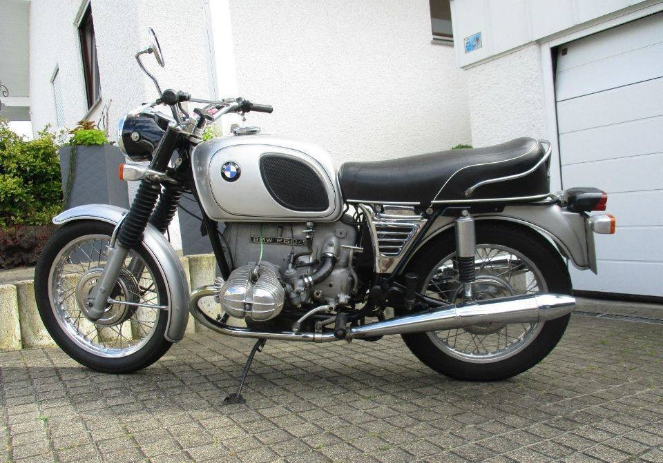

BMW R 60/5 OPIS MOTORU
BMW R 60/5 – produkowany od 1955 do 1960 dwucylindrowy (bokser) motocykl firmy BMW.Dwucylindrowy górnozaworowy silnik z jednym wałkiem rozrządu napędzanym kołem zębatym, w układzie bokser o mocy 40 KM. Suche sprzęgło jednotarczowe połączone z 4-biegową, nożnie sterowaną skrzynią biegów. Napęd koła tylnego wałem Kardana. Rama ze spawanych elektrycznie rur stalowych z zawieszeniem wahaczowym obu kół. Z przodu i tyłu zastosowano hamulce bębnowe o średnicy 200 mm. Prędkość maksymalna 160 km/h.
